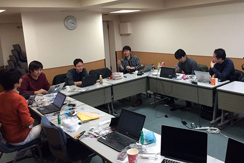
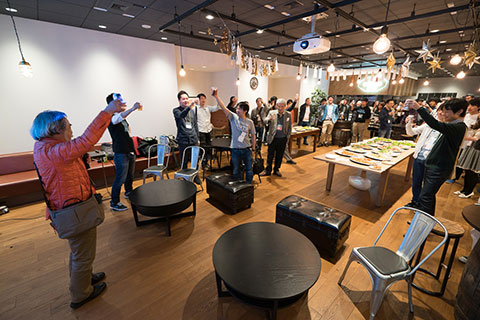

MITOU MAGAZINE
今月号のピックアップ
未踏社団合宿#0、未踏研究会#2＋未踏忘年会開催のご報告
メンタリング道場#1、中高生向け未踏説明会開催のご案内
目次 見出しをクリックすると詳細へ移動します
■１ 未踏社団合宿#0の報告
 11/27〜29、未踏社団が主催する開発合宿「未踏社団合宿#0」を行いました。前回のメルマガによる募集では宿泊参加者9名を想定していましたが、日帰り参加希望の問い合わせがあり11/23に日帰り参加もOKと加筆しました。その結果、宿泊での参加者が7名、日帰りの参加者が5名の総計12名となりました。
初日は13時に開場。金曜日だったため、仕事帰りに三三五五と集まる感じになりました。ハードウェアに関心のある参加者が多く、参加者の間で、必要な部品の足りない人に部品を融通したり、手持ちの部品でなんとかするテクニックを教えあったり、最近作ったものについての情報交換したりしました。初日は24時に解散となりました。
土曜日は朝から朝食バイキング会場で議論が白熱しました。土曜日は日帰りでさらに5人参加され、また教育のためお子さん連れで参加された方もいて、ほのぼのとした雰囲気になりました。
この日は、ハードウェアの量産に詳しい矢萩さんに深センの状況などのご講演を、また別の参加者からは日本のベンチャーを取り巻くエコシステムの現状について統計情報などに基づいた興味深い飛び入り講演をいただきました。
夕食後は、2日目から車で参加した久池井さんの運転で、近くにあるスーパー銭湯「大江戸温泉」に行き、裸の付き合いで親睦を深めました。深夜3時まで話が盛り上がり、海外での起業を検討している参加者に対しその経験のあるOBがメンタリングを行うなど、深く濃いコミュニケーションの場となったようです。
3日目も朝から議論が盛り上がり、アメリカやカナダのビザ事情をはじめ色々な情報が交換されました。12時半に会場を出た後は、希望者で近くの月島でもんじゃを食べながらの議論、また、その後秋葉原に移動。その日閉店する老舗パーツ屋「鈴商」を訪問し、秋月電子など色々な店をめぐって最終的には19時半に解散になりました。
開催後に参加者に取ったアンケートによれば、良かった点として「宿泊なしでの参加」が選べることを挙げる声が多かったです。一方で「二泊三日だったので土曜日がまるまる一日議論の時間に使えたこと」を評価する声も多く、今後も二泊三日を基本として、2日目の日帰り参加も受け付ける形がよいのかなと思っています。
一方でATNDでの募集の形にしたことには、参加しずらい、事前の交流がしずらい、などの問題があったように思っています。メールマガジンに参加しなかった方用のアンケートへのリンクを用意しましたので、ぜひフィードバック頂けるとありがたいです。
■２ 未踏研究会#2＋未踏忘年会報告
12月13日（日）、第二回目となる未踏研究会＋忘年会を日本橋のサイボウズ東京オフィスにて開催しました。雨の中、約70名の参加者にお集まりいただきました。今回のテーマはこの二本立てでした。
１，近年の未踏におけるプログラミング教育関連プロジェクト
・Siv3D：メディアアートのためのプログラミングライブラリの開発（2013年度採択・スーパークリエーター認定）
・Apply.ly：GUIのみによるマルチデバイス開発（2014年度採択・スーパークリエーター認定）
・hackforplay：ゲームをハックすることでプログラミングを学習する教材の開発（2015年度採択）
２，U-22プログラミングコンテスト（http://www.u22procon.com/report/index.html）受賞者による発表
・allergy（2015年度経済産業大臣賞受賞）
・Streem（2015年度経済産業大臣賞受賞）
・Recture〜復習しやすい授業記録アプリ〜（2015年度経済産業大臣賞受賞）
【未踏研究会#2】
まずは、会場をお貸しいただいたサイボウズの青野慶久社長（U-22プログラミングコンテスト実行委員長）よりご挨拶。
「ITが色々な業種・業界と交わることで社会を変えていくフェーズが来ました。それを実現させるための場所として、今年の7月にオープンさせた新しいオフィスです。交通の便も良く毎日のように色々な活動の場として使われています。皆さんが是非いろいろな人と交わることで社会に活躍できるような道筋を作っていきたいと考えています。」
続いて司会の鵜飼佑さん（2011年度スーパークリエーター）が本日の企画意図を発表しました。
「プログラミング教育が盛り上がっている中で、高い技術力と行動力を持つ未踏コミュニティとして、何ができるのか議論できる場を作りました。未踏研究会には、プログラミング教育関連ワーキンググループがあり、過去の採択事例を共有することで未踏コミュニティ内でのコラボレーション、またU-22プロコンの人たちと未踏コミュニティとのコラボを促進したいと思います。長期的には、未踏コミュニティとして日本のプログラミング教育に様々な形で貢献できる仕組みを作っていきます。」
理事の荒川からは未踏研究会について改めて説明。
「未踏からは、大企業、アカデミック、ベンチャーと横断的で多様な人材が輩出されており、その交流を促すのが研究会です。未踏研究会とは、いわば研究会のインキュベーションプログラムであり、研究という取り組みをエンカレッジするための仕組みです。」
ここからは登壇者による10分間の発表が続きます。
◆近年の未踏におけるプログラミング教育関連プロジェクト
・Siv3D：メディアアートのためのプログラミングライブラリの開発（2013年度採択・スーパークリエーター認定）鈴木遼さん
Siv3Dとは、C++で楽しく簡単にゲームやメディアアートを開発できるライブラリです。少ない行数で書くことができますが、教育におけるSiv3Dの役割としては初歩の次の段階、子どもたちの「あれをしたいこれをしたい」にちゃんと応えられるツールに位置づけられます。中高生を対象に本物の情報科学を学べる早稲田情報科学ジュニアアカデミーでは、Siv3Dを教材として用いられており、鈴木さんも中学生向けC++プログラミング講座を担当しています。
未踏xプログラミング教育という観点では、パズルのピースを発掘しつなげていく役割が期待されていると提起。日本から世界に誇れるプログラミング教育の体系を作り出すために、鈴木さんもそのピースの一つとして頑張っていきたいし、皆さんとも協力しあっていきたいと締めくくりました。
・Apply.ly：GUIのみによるマルチデバイス開発（2014年度採択・スーパークリエーター認定）岡田侑弥さん
Apply.lyは、誰でもプログラミングなしでウェブ上でスマートフォンアプリを作れるサービス。ブロックをつなげていくことでそれを実現しています。ブロックからコードへの変換はリアルタイムで行われていて、その逆も実装予定です。ブロックであってもAngularJSのモジュールなどを使い、それをブロックに変換することで相当高度なことにも対応できるそうです。
今後の課題として上げたのがデバッグ。テスト用アプリと操作用のウェブを連携させることで、例えばブレークポイントでアプリが止まり、ウェブの方ではその変数が分かるような仕組みを作りたいということです。
・hackforplay：ゲームをハックすることでプログラミングを学習する教材の開発（2015年度採択）寺本大輝さん
hackforplayは、プログラムを書き換えることでしかクリアできないゲームです。敵のHPを減らしたり、主人公の場所を移動させたりすることで、スタージをクリアするデモを披露してくれました。書き換え方は様々あり、攻略方法も自分で作れるのが特徴。ゲームのステージを自分で作成することもでき、他の人が作ったステージに挑戦することも可能です。
質疑応答では、参加されていたバンダイナムコの方から自社キャラクターの二次創作におけるライセンスの紹介など、まさに研究会が目指すコラボレーションの芽が生まれていました。
◆U-22プロコン・2015年度経済産業大臣賞の受賞者の講演
・allergy 中馬慎之祐さん（成蹊小学校）
allergyは、海外でも安心して外食ができる食物アレルギーの人向けの多言語アプリです。本人も卵アレルギーである中馬さん。食物アレルギーを抱える人は全世界に5億人いるとされ、自分もその一人として彼らを救いたいと思ったそうです。異言語コミュニケーションでは視覚的に伝えることが重要なため、デザインには特に気を使っているとのこと。
質疑応答では質問側の大人たちが目を丸くするほどの立派な対応をしてくれました。次の実装計画として、現在対応中のアレルゲン9つに加えもっとマイナーなアレルゲンへの対応を目指し、さらにより多くの言語、そしてお店の人用のallergyを作りたいとのことです。
・Streem 清水大輝さん（米子高専）
これまで開発したiOSアプリの話を中心に発表いただきました。インターネットメディアとキーワードを合わせたキューレーションアプリ「Streem」は、TwitterやYouTubeなど様々なSNSからキーワードに基づいた情報を集めることができるアプリです。
最近ではマーケティングを意識したアプリ開発を心がけ、芸能人のファン向けアプリではダウンロード数を増やすことを念頭に置いた施策や計画を立てられていました。来年度からは大学の二部でマーケティングの勉強をしながら、昼間はスタートアップで働く予定だそうです。
・Recture〜復習しやすい授業記録アプリ〜 藤坂祐史さん（筑波大学）
Rectureは授業を録音し重要箇所にタグを付けることで、講義内容の復習に役立てるアプリです。現在AppStoreでの公開に向けて開発中とのこと。特に配布資料と投影スライドが同じような授業では、ノート代わりとして復習のために効果的とのこと。音声認識による自動文字起こし（テキスト化）は行わず、あくまでも音声とユーザーによるタグ付けに留めているところが、今の授業システムの中では現実的な機能であるようです。
今後はタグを共有する機能や、授業だけではなくインタビューなど別の利用シーンも想定した開発も念頭に置いていると語っていました。
【忘年会】
 忘年会は、同じくサイボウズさんの今度は隣にあるBARに場所を移して開催されました。BARというだけあって、様々な形の椅子やテーブルが並び、食事と飲み物を片手に交流するには最適の場所でした。時に会場前方の大型スクリーンを眺めながら、それぞれ思い思いのスタイルで楽しんでいただけたようでした。
恒例のLT、今回は7名の方にご参加いただきました。発表順にお名前と概要だけご紹介します。会場の賑わいにマイクの音量が追いつきませんでしたが、皆さん必死に語っていただきました。
・西尾泰和さん「創造的人材のための知財LT」
・千田範夫さん…分子計算支援ソフトウェアの開発など
・江草陽太さん…さくらインターネットの未踏事業への支援内容について
・上田真史さん…「IoT研究会 or IoT WGをつくりたい」
・久池井淳さん…未踏社団が行うべきこと（案）
・Kory矢萩さん…「2015年WEB系な色々」
・ところてんさん…「機械学習研究会やるよ」
最後に社団からのご案内として「未踏ナイト2016」開催が発表され（先行申し込みページヘのリンクはメルマガを参照下さい）、CSAJ前川徹専務理事による締めの挨拶で終了となりました。
■３ メンタリング道場#1のご案内
来年1月19日に朝倉祐介氏による少数座談式セミナーが開催されます。一方通行のセミナーではない深い議論やQ&Aができる場を目指しています。興味のある方はメルマガにあるリンク先をご覧下さい。
◆朝倉祐介氏のご紹介と今回の企画について（代表理事・竹内）
1982年7月生まれ。中学卒業後、競馬騎手になることを目指してオーストラリアへ。身長が高くなりすぎて騎手を断念したあと、北海道で競争馬の調教。バイクの事故でひどい骨折。ここで大学に行こうと考え、3年かけて大検をパス。20歳で東大法学部にストレート入学。そこで起業を2回経験。そのうちの1つが未踏OB/OGが4人も絡んでいたネイキッドテクノロジー。マッキンゼーでしばらく修行したあと、そこに戻って社長に就任し、会社をミクシィに売却すると同時に同社に就職。それから2年も経たずにミクシィの社長に抜擢。業績が悪化していた同社を見事に再建。1年ちょっとで退任して、現在スタンフォード大学客員研究員。
ともかく異色中の異色と言える方です。ご自身で「自分は0から1を生むのは得意ではなく、1を10や100をするのが自分の本領だ」とおっしゃっています。起業を目指す、あるいは起業で苦労している未踏OB/OGが、その経営哲学から学べるものはとてつもなく大きいと思います。
朝倉氏は上記のように未踏OB/OGの「生態(?)」をよくご存知のため、未踏には深い共鳴を覚えておられます。そんな朝倉氏が日本に短期滞在される合間に、未踏OB/OGのお役に立てるならと、いわば第1回の「メンタリング道場」をお引き受けいただくことなりました。小人数で膝詰め談判的に、深掘りした対話で盛り上がることを想定しています。
ご紹介いただいた、やはり異色中の異色、リクルートホールディングスの石山洸氏に感謝いたします。
■４ 中高生向け未踏説明会開催のお知らせ
1/24にマイクロソフトの品川オフィスで、中高生向けの未踏説明会が行われます。中高生に未踏の魅力、そして未踏出身人材の魅力を知ってもらい、そして、3/9までに書類を書き上げて2016年度の未踏に応募してもらうことを目的としています。
今後詳しい情報はメルマガに記載されたリンク先のページで更新されていく予定です。お近くに興味を持ちそうな中高生がいましたらぜひ背中を押してあげてください。なお、中高生にかぎらず、小学生や高専生も大歓迎しております。
■５ 会員申請フォーム刷新とクレジットカード情報の無効化のお知らせ
未踏社団の会員申請フォームを刷新し、以前から不審に思う声の多かった、クレジットカード番号などの収集をやめました。
なお、旧システムでクレジットカード番号を入れていた会員の方から「退任した人がクレジットカード番号を悪用する可能性があるのではないか？」という指摘を頂きました。旧システムを調査しましたところ、生のクレジットカード情報はそもそも保存されておらず、WebPayのトークンが保存されていましたが、それも11/24に無効化しました。そのため、このトークンを誰かが手元に保存していたとしても、もはや悪用することは不可能です。またもし万が一不正利用があった場合は、社団側からの手続きで返金処理が可能です。なにか懸念があればお伝えください。
(2016-01-22加筆) この章の記述について、「『退任した特定の1名の人物が不審なクレジットカード番号の悪用を行っており、退任したから悪用できないようにやめた』という趣旨の記述であり、その特定1名に対する名誉棄損にあたるのではないか」というご指摘がありました。クレジットカードの悪用の事実は確認されておりません。言葉足らずのために誤解を招いてしまったことに対して真摯にお詫び申し上げます。
こちらの件に関して事実ベースで整理させていただきます。
- 3月の申込フォーム公開以降、正会員やPMから「なぜクレジットカード番号の入力が必要なのか」「中高生の採択者はクレジットカードを持っていないことが多いのではないか」などのご質問・ご指摘がありました。
- 10月に、運営会議での議論で「そもそもクレジットカード番号や国籍、住所などを収集する必要はないのでは」という意見があり、収拾しない方針で意思決定しました。
- 11月に、正会員から「退任者がクレジットカードを悪用できないようにしているか？」というご質問がありました。
- ウェブシステムの引継ぎ担当者はクレジットカード情報の管理について把握していなかったため、調査と問い合わせを行い、退職者の悪用を防ぐためにはWebPayトークンの無効化を行うことが必要だと判明しました。
- 11月25日までに、WebPayトークンの無効化と、申込フォームの刷新とを行いました。
- この期間にクレジットカード情報にアクセスできた退任者は複数名おり、退任者という言葉で人物を特定することはできません。
■６ 過去のメールマガジンについて
過去のメールマガジンについてはこちらのURLからご覧になれます。http://www.mitou.org/mitoumagazine/
また、こちらのページには認証などは掛かっておりませんので自由にリンク・拡散などしていただいても構いません。社団のトップページからもリンクを張りました。これからも社団の行っている活動を積極的に公開していきたいと思っています。